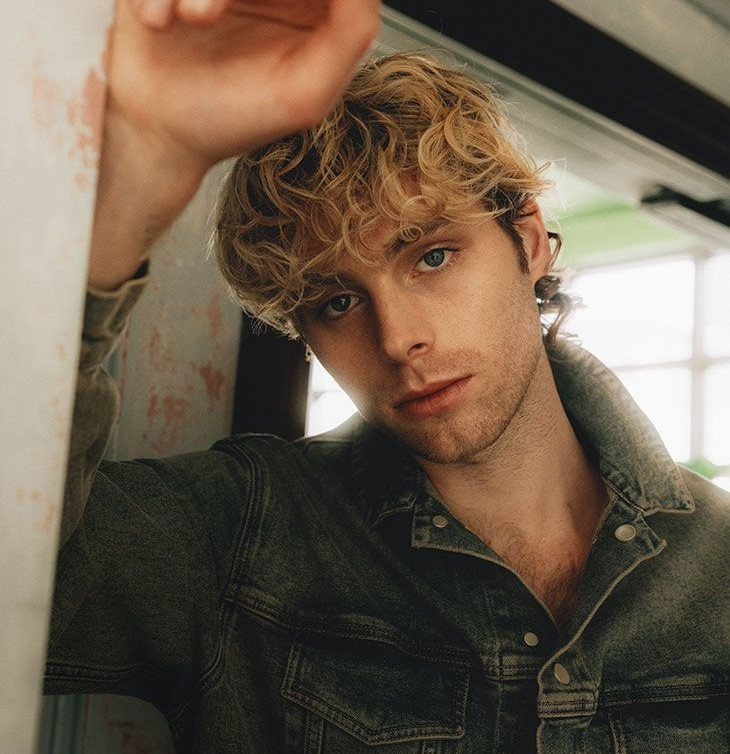

Luke Hemmings
Luke Hemmings (Vocalista principal y guitarrista rítmico) nació el 16 de julio de 1996 en Sídney, Australia. Es conocido por su distintiva voz y su habilidad para tocar la guitarra. Luke fue uno de los miembros fundadores de la banda junto con Michael Clifford, y a lo largo de los años ha sido la cara más visible del grupo. Además de su rol como vocalista, Luke ha explorado otros proyectos musicales en su carrera en solitario. Su estilo musical varía desde el pop punk hasta el pop-rock, y ha sido una de las figuras más influyentes dentro de la banda.